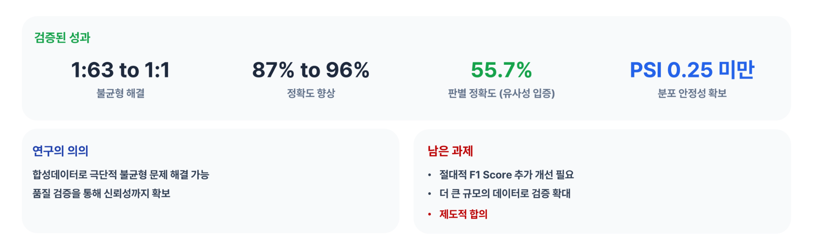
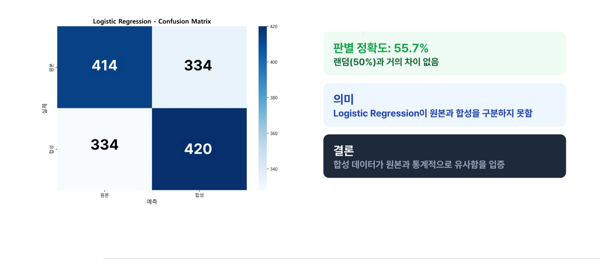
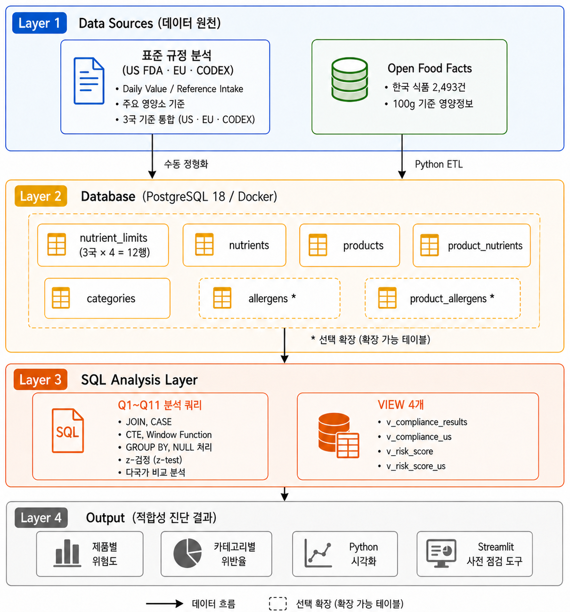
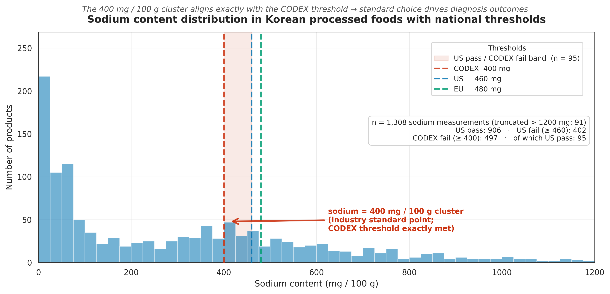
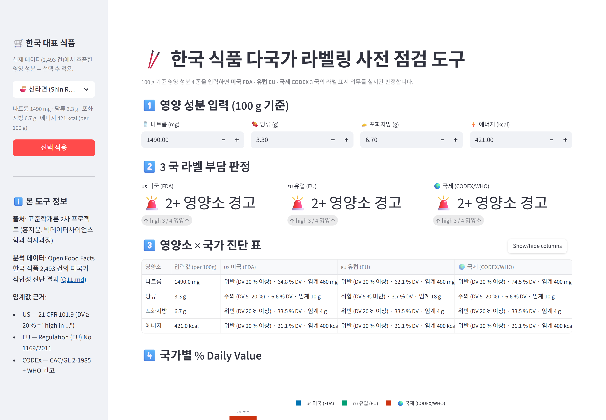
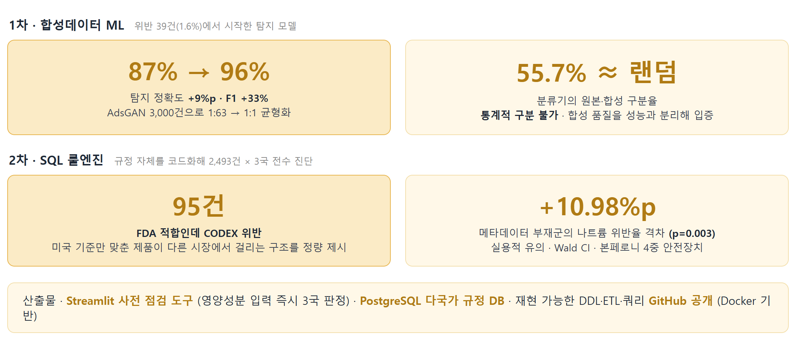

위반 사례 39건(1.6%)뿐인 데이터에서 시작한 2단계 시리즈 연구. 1차는 GAN 합성데이터로 탐지 모델을 만들고, 그 96% 정확도의 한계를 스스로 규명한 뒤, 2차는 규정 자체를 SQL 룰엔진으로 코드화. 영양성분 입력 즉시 3국 적합성을 판정하는 Streamlit 도구까지 완성
개요
| 단계 | 접근 | 핵심 결과 |
|---|---|---|
| 1차 · 합성데이터 ML (2025.09~12) | 위험 라벨 4등급 직접 설계 + AdsGAN 3,000건으로 1:63 → 1:1 균형화 후 Random Forest 학습 | 정확도 87 → 96% · 판별 테스트 55.7% ≈ 랜덤 (합성 품질 입증) |
| 2차 · SQL 룰엔진 (2026.03~06) | FDA·EU·CODEX 기준값을 PostgreSQL로 코드화, 2,493건 × 3국 전수 진단 | FDA 적합·CODEX 위반 95건 발견 · 나트륨 위반율 격차 +10.98%p (p=0.003) |
- 두 단계는 별개 프로젝트가 아니라 동일 데이터셋을 유지한 채 접근을 뒤집어 직접 비교한 시리즈. 1차 결과의 자기 검증이 2차 전환의 근거
문제 정의
- 규제 · 통관을 막는 것은 관세가 아니라 포장의 영양성분 표시사항
- 불일치 · FDA(21 CFR 101.9), EU(Reg. 1169/2011), CODEX(CXG 2-1985)가 같은 영양소에 다른 기준치와 정의를 사용. 한 나라에서 통과한 제품이 다른 나라에서 걸림
- 불균형 · 위반 사례는 한국 식품 2,493건 중 39건(1.6%, 1:63). 전부 정상으로 찍어도 정확도 98%라 위험 패턴 학습 불성립
- 라벨 부재 · 어느 데이터셋에도 TBT 위반 정답 라벨이 없어 지도학습의 전제부터 붕괴
1차 · 합성데이터로 탐지 모델 만들기
| 검토안 | 내용 | 판단 |
|---|---|---|
| A안. 통계적 불균형 대응 (SMOTE·복제·가중치) | 기존 39건을 복제·보간하거나 다수 클래스 축소 | 기각. 복제는 같은 점을 여러 번 찍는 것이라 39건의 정보량은 그대로 |
| B안. 생성형 AI에 규정 판정 위임 | LLM이 제품 정보를 보고 위반 여부를 직접 판단 | 기각. 환각 위험으로 통관이 걸린 판정 업무에 부적합 |
| C안. 합성데이터 생성 AdsGAN (채택) | 원본의 분포·변수 간 상관구조를 학습해 새 정보량을 가진 표본 생성 | 채택. 위험 클래스가 놓인 공간 자체를 채움 |
- 라벨 설계 · 규정 논리를 데이터로 번역. 한국어 제품 정보 대비 영문 표시 정보의 격차를 기준으로 위험 4등급을 직접 정의 (No Data 93.3% / English Only 4.5% / Gap 1.6% / Compliant 0.6%)
- 데이터 구축 · 원본 약 4GB parquet에서 한국 식품 2,493건 필터링, 영양성분 9종과 알레르겐 7종 등 18개 피처 설계
- 라벨 자동 생성 · Solar-pro LLM으로 한국어 정보를 FDA 영문 JSON으로 변환, Pillow로 Nutrition Facts 라벨 이미지 렌더링
- 합성데이터 · AdsGAN 3,000건 생성(RTX 4080, 300 epochs)으로 1:63을 1:1로 균형화
- 품질 검증 · 성능과 분리한 3중 검증. 분포(KS, Wasserstein, PSI), 구조(원본과 합성의 상관행렬 비교), 판별(분류기의 원본과 합성 구분율)


96%가 실제로 잰 것
- 설명 불가 · 왜 위반인지를 조항 단위로 제시할 수 없음
- 유지보수 · 규정이 개정되면 재학습 필요
- 결정적 한계 · 모델이 맞힌 대상은 규정 위반이 아니라 직접 만든 정보 공백 등급. 등급을 가르는 기준은 영문 표시 정보의 유무였고, 그 생성 필드가 입력 변수에도 남아 있어 96%는 예정된 결과
- 전환 판단 · 발견이라 부를 수 없다고 보고, 데이터에서 규제를 추정하는 대신 규정 조문 자체를 DB에 넣는 방식으로 전환
2차 · 규정을 SQL 룰엔진으로 코드화

- DB 설계 · 영양소 정체성과 국가별 기준값을 분리하고 country_code 복합키로 구성. 새 국가 표준은 행 추가만으로 확장
- 진단 쿼리 · 국가 필터 없는 JOIN으로 측정값 1건이 자동으로 3국 판정 행이 되는 VIEW 구성. JOIN과 CASE, CTE, 윈도우 함수 쿼리 10종으로 전수 진단
- 1차 오류 재발견 · 결측을 0으로 대치한 처리가 측정되지 않은 영양소를 적합으로 오판함을 확인. NULL 보존으로 전환하고 오염 셀 23.9%를 정량화, 진단 표본 34% 감소를 감수
- 표준의 빈틈 · CODEX에 없는 당류와 에너지 기준은 WHO 가이드라인으로 대체. 3국의 당류 정의 차이(US 첨가당, EU 총당, CODEX 유리당)와 EU 소금 단위는 환산 결정을 문서화하고 상한 추정으로 명시
- 자체 규칙 검증 · 제품명 키워드 매칭 오류(soup으로 인해 더덕무침이 음료로 분류)를 발견. 추론군과 메타데이터군 위반율의 통계적 동등성으로 결론이 흔들리지 않음을 별도 입증


결과

- 1차 성과 · 정확도 87에서 96%(F1 +33%), 판별 55.7%로 합성데이터 품질 입증. 동시에 그 수치가 재는 대상의 한계까지 스스로 규명
- 2차 발견 · FDA 적합이면서 CODEX 위반인 95건 확인. 미국 기준만 보고 만든 제품이 다른 시장에서 걸리는 구조를 정량 제시
- 통계 검증 · 나트륨에서만 메타데이터 부재군의 위반율이 유의하게 높음(+10.98%p, p=0.003). 실용적 유의 10%p, Wald 신뢰구간, 본페로니 보정의 4중 안전장치
- 두 접근의 관계 · 같은 데이터에서 1차 ML의 변수 중요도와 2차 룰엔진의 실제 위반율을 비교해 대체가 아닌 상호보완 관계임을 제시
- 산출물 · Streamlit 사전 점검 도구, PostgreSQL 다국가 규정 DB, 재현 가능한 DDL과 ETL, 쿼리 GitHub 공개(Docker 기반, 접속 정보 .env 분리)
자료
1차 · 합성데이터 ML
(TBT) 합성데이터 활용 식품 위반 탐지 모델 성능 향상https://github.com/hjiyun/synthetic-data-tbt-detection